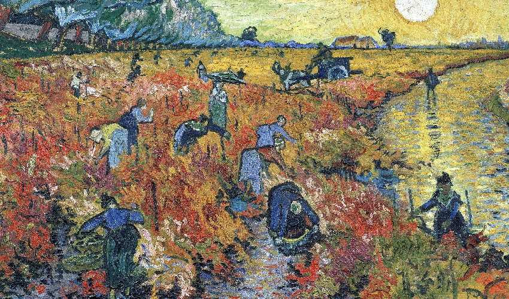
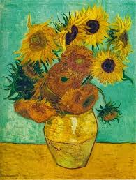
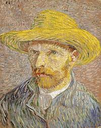
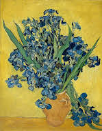

A Vinha Encarnada
A Vinha Encarnada é um quadro do pintor holandês Vincent Van Gogh, concluído no início de novembro de 1888.
Esta foi a única peça vendida pelo artista em vida. O quadro foi adquirido em Bruxelas por 400 Francos, por Anna Boch.

Os girassóis
Van Gogh pintou uma série de 11 quadros de girassóis (quatro em Paris e sete em Arles), que se tornaram algumas das suas obras mais icónicas, simbolizando para ele felicidade, gratidão, força e resistência.

A noite estrelada
A Noite Estrelada é uma pintura de Vincent van Gogh de 1889. A obra retrata a vista da janela de um quarto do hospício de Saint-Rémy-de-Provence, pouco antes do nascer do sol, com a adição de um vilarejo idealizado pelo artista.
A tela faz parte da coleção permanente do Museu de Arte Moderna de Nova Iorque desde 1941.

Autorretrato com Chapéu de Feltro
"Autorretrato com Chapéu de Feltro" é um óleo sobre tela, pintado por Vincent van Gogh em 1888.
Van Gogh pintou esta tela no inverno europeu de 1887-1888, quando viveu em Paris por dois anos.

Vaso com íris
Vaso com íris contra um fundo amarelo é uma pintura a óleo sobre tela feita em 1889 pelo pintor Vincent Van Gogh. Está preservado no Museu Van Gogh em Amsterdã.
É um dos trabalhos realizados enquanto ele estava internado na clínica psiquiátrica de Saint-Rémy, cidade próxima a Arles.

Os comedores de batata
Os comedores de batata é um quadro do pintor Vincent van Gogh, terminado em abril de 1885.
O retrato de uma época, de uma classe trabalhadora e sua base alimentar.